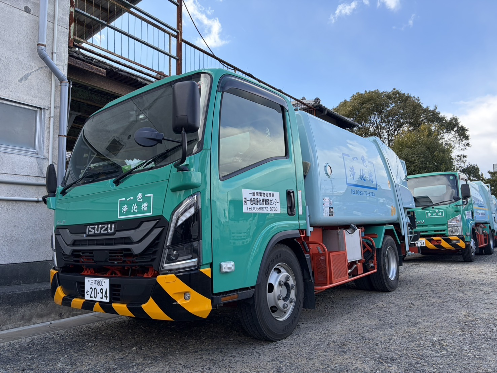

事業内容と料金体系
浄化槽の管理は「点検」と「清掃」、そして「法定検査」の3点セットが必要です。
当店はこれら全てをワンストップでサポートします。
1. 保守点検（健康診断）
年3〜4回（義務）
微生物が元気に働いているか、機械（ブロア）が故障していないかをチェックし、消毒薬を補充します。人間でいう「定期検診」です。
- 水質・装置の動作確認
- 消毒剤の補充
- 害虫駆除（殺虫プレート設置等）
1回 4,000円〜
2. 浄化槽清掃（汲み取り）
年1回以上（義務）
バキュームカーで底に溜まった泥（汚泥）を全量抜き取り、内部を洗浄します。人間でいう「外科手術」のようなリセット作業です。
| 5人槽 | 要お見積もり |
|---|---|
| 7人槽 | 要お見積もり |
※汚泥量や作業条件により変動します。
3. し尿・ゴミ収集運搬
地域密着サービス
浄化槽以外のトイレ（汲み取り式）や、家庭ごみ・事業系ごみの収集も行っています。
- し尿汲み取り（仮設トイレ対応可）
- 引越し時の大量ゴミ回収
- 事業所から出る定期ゴミ回収
お見積もり無料
西尾市 補助金情報
浄化槽の入れ替え・リフォームをご検討の方へ
汲み取り便槽や単独処理浄化槽から「合併処理浄化槽」への転換には、
西尾市から最大58.5万円の補助金が出る場合があります。
- 5人槽：360,000円
- 7人槽：462,000円
- 配管工事費：上限300,000円
※令和7年度基準の例です。詳しくはお問い合わせください。
補助金について相談するよくあるご質問
主に西尾市一色地区を中心に対応しています。その他のエリアについてはお電話でご相談ください。
愛知県知事が指定した検査機関（中部微生物研究所）が行う定期検査です。当店は検査前の清掃や、指摘事項の改善作業に対応しています。
一色町内に拠点があるため、最短即日での確認が可能です（予約状況によります）。まずはお電話ください。